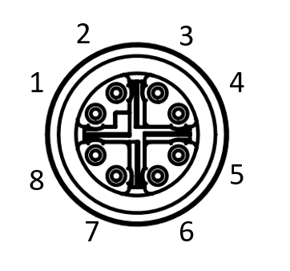

Installing the Camera Hardware¶
Mounting¶
The camera is equipped with six M4 mounting holes. The camera front contains one pair of M4 holes on each side. An additional pair of M4 holes are found at the back of the bottom side.
Connector¶
The ATX245S camera uses an x-coded 8-pin M12 connector with the following pin mapping as seen from rear of the camera.
{kind=link}

| Pin Number (Camera Side) | Pin Description |
|---|---|
| 1 | BI_DA+ |
| 2 | BI_DA- |
| 3 | BI_DB+ |
| 4 | BI_DB- |
| 5 | BI_DD+ |
| 6 | BI_DD- |
| 7 | BI_DC- |
| 8 | BI_DC+ |
GigE Cable¶
- The ATX245S camera uses an x-coded 8-position M12 connector (compliant with IEC 61076-2-109) for Ethernet communication.
- For the best performance, a shielded Ethernet Cat6a or higher should be used. STP shielding is recommended to minimize electromagnetic interference in environments with harsh EMI conditions.
- An unshielded or lower grade/quality Ethernet cable may result in loss of camera connection and/or lost and inconsistent image data.
- For 10GBASE-T bandwidth, the camera runs in Short Reach Mode. The maximum cable length from camera to host with no switch or repeater in between is 25 meters.
- Lucid Vision Labs recommends using qualified Ethernet cables from our web store.
GPIO Cable¶
The ATX245S camera is equipped with an 8-pin General Purpose Input/Output (GPIO) connector at the back.
- Lucid Vision Labs cameras are designed to use shielded or unshielded Ethernet cables.
- When using a shielded GPIO cable in an industrial setting, care must be taken to prevent ground loops from forming between the camera chassis, Ethernet PoE power sourcing equipment, IT infrastructure, and devices connected to GPIO.
- The GPIO cable can be shielded if terminated properly. An improper GPIO shield termination scheme can cause substantial EMC emissions and immunity issues, induce noise, and cause damage to the camera or equipment attached to the GPIO cable. Using a shielded GPIO cable requires careful consideration of the system level EMC when shielded Ethernet cables and PoE power are used.
- Only use shielded GPIO cables when powering the camera through GPIO. Be aware of the power supply earth connection, and to the Ethernet shielding termination, which is best achieved by AC-coupling the Ethernet shield at the host chassis, or by using UTP cable.
- Any GPIO cable with M8 connector compliant with IEC 61076-2-104 will work. An example connector that mates with ATX245S is Phoenix Contact Part Number 1424237.
- The recommended wire thickness is AWG26 or AWG28.
- Lucid Vision Labs recommends using qualified GPIO cables from our web store.
| Consult the GPIO Characteristics section for a GPIO pinout diagram. |
Lens¶
TFL mount lens¶
The TFL-mount (M35 x 0.75) is designed specifically for large format sensors while maintaining an efficient size. This Japan Industrial Imaging Association (JIIA) lens standard uses a 35 mm mount size with a back flange focal distance (BFD) of 17.526 mm. The TFL-mount can also take advantage of F-mount lenses with the addition of a ring adapter.
C mount lens¶
C mount lenses can be used on a C mount camera. According to standard, the C mount flange back distance is 17.53 mm.
| Note about using a heavy lens with the camera. | |
Mounting a heavy and long lens may cause damage to the camera board. If the lens is considerably heavier than the camera, the lens’ weight may exert excessive force on the lens mount attached to the camera’s board, causing unexpected damage to the board and soldered components. If a heavy lens is necessary for the production environment, it is recommended to use the lens as a mounting point rather than the camera to avoid damage to the camera.